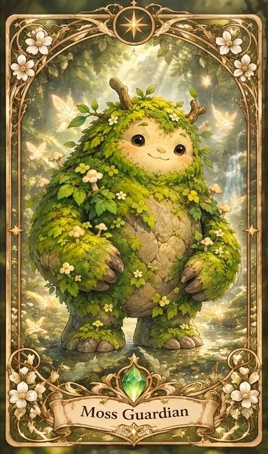
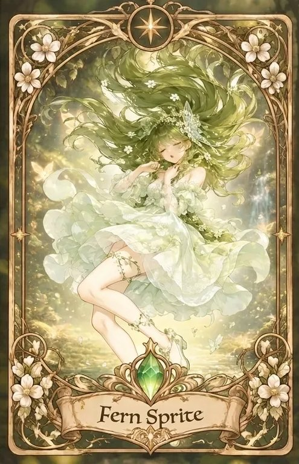
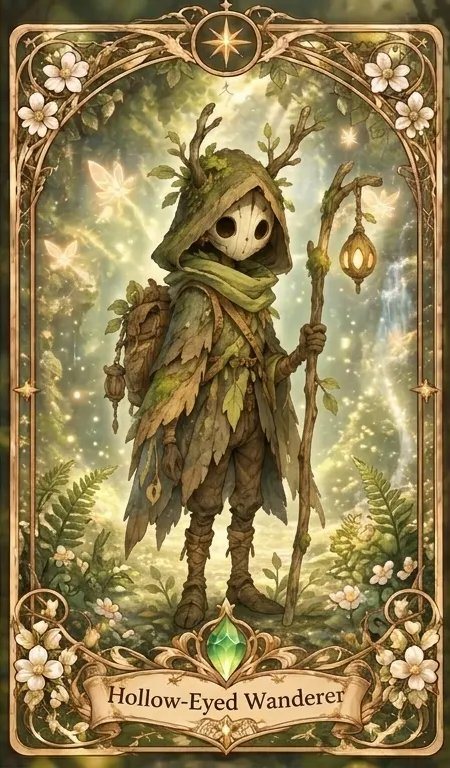

Project Identity Card
Title
AI-Assisted Character Card Design
Curiosity Statement
How can AI help designers create unique and visually consistent characters for a board game while maintaining their own creative style?
Short Summary
This project explores how AI tools can support the creation of original fantasy characters for digital board game cards. The research focuses on character appearance, silhouettes, color palettes, facial expressions, and visual consistency. AI-generated results are reviewed and refined through human creative decisions.
Audience / Context
The project is intended for designers exploring AI-assisted character design, especially those creating visual assets for fantasy board games. It examines how AI can support the creative process while allowing designers to maintain their own artistic direction.
Possible Final Direction(s)
A collection of digital fantasy character cards featuring a consistent visual style, original character concepts, and carefully developed appearances. The cards will use an ornate fantasy-inspired design with decorative frames and individual character illustrations.
Inquiry Brief
Research Question
How can AI help designers create unique and visually consistent characters for a board game while maintaining their own creative style?
Why It Matters
Creating multiple characters in one visual style can be challenging. AI tools may help designers explore different ideas and variations, but human creative direction is important for maintaining originality and consistency.
What I Need to Learn
- How AI can generate and develop different character silhouettes.
- How to maintain consistent color palettes and visual styles.
- How prompts and visual references affect generated characters.
- How human editing can improve AI-generated character designs.
Possible Outcomes
- A collection of fantasy character cards.
- A consistent visual style and design system for the cards.
- A documented comparison of AI-assisted design experiments.
Source Starter List
- AAAI — Designing Characters with AI. Research on AI-assisted character creation and design.
- Autodesk — Paratrouper. A creative AI project relevant to exploring AI-supported visual workflows.
- Journal of Creativity — Research on task-oriented generative AI and creative work.
- Apollo Technical — Character consistency. Notes on clear descriptions and visual references for consistent results.
- getimg.ai — Board game character AI resources. Practical examples of AI-assisted character creation.
- Little Feats — Additional resource shared during peer research.
Project Brief / Weekly Roadmap
Research and Planning
Research AI-assisted character design and collect references related to fantasy character illustrations and card design.
Character Concept Development
Develop original fantasy character concepts and explore their appearances, silhouettes, expressions, and color palettes.
AI-Assisted Design Experiments
Use AI tools to explore different character illustrations and investigate how prompts and visual references affect the results.
Visual Style Development
Explore a unified fantasy-inspired card style with ornate decorative frames, gold details, and individual character illustrations.
Final Deliverable
Create a collection of digital fantasy board game character cards with a consistent visual identity.
Prompt Log
This section documents AI prompts used to create and refine fantasy board game character cards.
Prompt Categories
- Character appearance and visual details.
- Consistent fantasy illustration style.
- Character silhouettes, poses, and expressions.
- Color palettes and decorative visual elements.
- Adapting character illustrations to the board game card style.
Prompts, AI-generated images, and design adjustments will be documented as the character cards are developed.
Experiment Log
Moss Guardian
A cute, rounded gray-brown living stone with green moss and leaves.
Fern Sprite
A fairy-like character with closed eyes and an open mouth, flying sideways with flowing hair.
Hollow-Eyed Wanderer
A mysterious fantasy character concept for the board game card collection.
Design Exploration
These character concepts will be developed through AI-generated illustrations, visual references, and creative refinement.
The experiments focus on character appearance, recognizable silhouettes, color palettes, expressions, and consistency across the card collection.
Character Reference Gallery

Fern Sprite

Hollow-Eyed Wanderer
Links / Workspace Board
AI Design Tools
AI tools used for exploring and developing fantasy character illustrations and board game card designs.